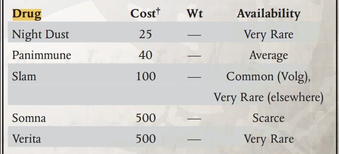

通过一种特殊的夹子将两个弹匣上下颠倒着粘在一起，从而增加换弹速度。一般而言，这种特殊的夹子只有军官们才会使用——老兵们会告诉你，胶带比那种不知道从哪儿来的夹子好使多了。
使装填武器所需时间下降一级（如 2 完整动作变 1 完整动作）；（译注：书中并未提及没有可拆卸式弹匣的武器是否可以安装此类升级，建议依照常识考虑）
这种特殊设计的重型手套可以允许使用者将一把适用的武器固定在手上（译注：从书上的配图来看，这一固定方式比较接近于风暴爆弹被固定在终结者甲手臂上的方式）并使用一种特殊设计的扳机击发，从而在使用远程武器的同时保障使用者双手自由。此类升级会使被固定的武器射程下降 30%；
适用武器：所有原始、激光、实体弹、爆弹武器和热熔手枪；
火控沉思者系统包括一套制导系统与传感器，安装此升级的武器进行的一切 BS 检定+10；
允许重型武器进行架设，架设两脚架是一个部分动作，同时提供前方 90°的射界；架设三脚架是一个完整动作，提供前方 180°的射界；
| 名称 | 价格 | 重量 | 稀有度 |
|---|---|---|---|
| 并联弹匣 | 10 | / | 匮乏 |
| 前臂武器固定手套 | 300 | +1kg | 匮乏 |
| 火控沉思者系统 | 2250 | +1.5kg | 稀有 |
| 三脚架与两脚架 | 25 | +2kg | 一般 |
| 地狱枪专用充能匣 | 50/匣 | / | 稀有 |
（见药物部分）
步兵的好帮手，能挖个坑保证你活着，也能为保证死了的你挖个坑，当然如果你想保证谁死了的话，它也能帮上忙。
啥都能装，从你昨晚跟隔壁排兄弟打牌赢来的压缩饼干到你自己（有时候是一部分的你，这要部分取决于帝皇有没有对你展现出某种仁慈），没有什么它装不下的。如果有，就换一个更大的。
没有人不喜欢这玩意儿，晚上降温的时候没有这玩意儿你会难受得要死，这套里头还有厚毯子，我相信你绝对用得上。
根据当前你们部署的世界的真实磁极情况进行了校准，如果你想确定些东西的位置最好和地图一起用，很重要的小玩意儿。
一般大家都叫他狗牌，好消息是这玩意儿的材质比你身上的大多数东西都结实，所以碰到一些不太好的事情的时候，它能帮助你们排的医疗兵或者其他什么在乎你的人认出那些曾经是你的东西。当然，前提是没有坏家伙把它收去当战利品。
根据你们要去的鬼地方的实际情况，这个装备组可能会包括但不限于更多一床毯子、加厚的帐篷内衬、防晒霜、驱虫剂、过滤塞、厚手套和暖宝宝之类的东西，有时候甚至还有抗辐射药片。希望你们都能得到它，每个人都希望。
银河系畅销书榜单（如果有的话）前三名的有力竞争者，按照规定每个大头兵都应该随身带着一本。书上内容是实打实的充实，在刨去一些··“正当”的内容之后，书上的内容从队列怎么站到异形长啥样，还有光枪该怎么保养，可以说是包罗万象。不过更有意义的东西在于这玩意儿上头还有不少祷文之类的东西，多念念吧，这对你有好处。
可以绑在你的光枪上，也可以手持，上面还有一个可以调节的刻度能让你把它当个手电筒使。一个标准充能匣能让它提供 1D5+5 小时的照明。
有一把勺子，一把叉子，一把餐刀，同时还有一个可以折叠的马克杯，同时还有一个拿来装菜用的小托盘，金属制的外表甚至能让你把它关上之后扔进火里给自己准备一顿热饭，前提是你有办法把它再从火里拿出来。
包括但不限于剃须刀、肥皂、牙刷和牙膏，还有那些团里觉得你需要用的东西，比如抗真菌药和驱虫药。
装沙子的时候能吃枪子，装衣服的时候能放脑壳，只要别弄反了就行。
简单耐用，一般带有防水涂层和在炎热地区用来反射阳光的涂层，能够让你和你的一位室友（还有你们的全套装备）比较舒适的睡上一晚。
螺丝刀、扳手、电线、电工胶，总之就是你很熟悉的东西，还有一卷因为粘力强劲到几乎不会脱落的“土胶带”，以及一把多功能斧头，保证你修车修枪甚至修理人都用得上。
代表着你们团的历史、战斗风格、荣誉，之类的七七八八的玩意儿，这玩意儿到底是个什么样只能说各团不重样，但是当涉及到一些比如雨靴、厚手套之类的东西的时候，那就要看你们团军需官的本事了··
挂在你的防弹甲外边的副包组，里头能塞从没吃完的巧克力棒到刚打空的能量匣和手榴弹在内的一切东西，甚至可以挂上你的手枪。这玩意儿在战场上就像制服，仔细观察老兵们对它们的改装，你能在看清他们的性格的同时增加自己活下来的概率。最大挂载 15kg 的物品。
星界军中有句名言，叫“今天你糊弄装备，明天装备糊弄你”，这套包括清洁、润滑和半分解工具的维护工具组一般会随你的武器一并下发，对你的步枪好一点。但是，也有人会把步枪称为他们的恋人，而恋人的怒气有时并不会因为你的温柔对待而消散··
小玩意儿，能塞进你的口袋里，无论是叫人来还是叫人跑都很有用，特别是你们的无线电也不是那么靠谱，对吧？
通过虔诚的信仰和祈祷，还有一些传承已久的隐秘传说，帝皇的信徒们能够将普通的子弹和剑刃化为对抗亚空间恐怖造物的利器。
祝圣弹药和圣化武器只能通过审判庭或者国教教会的高级别成员获得。这些升级将会使相关武器拥有【神圣】特性。
祝圣弹药适用范围：爆弹武器、火焰武器、实体弹武器；
圣化武器适用范围：所有原始近战武器（可以与单分子升级共存）和链锯武器，物品品质不低于【优秀】级别
译注：关于圣化武器，《忠烈之血》拓展中有同名牧师服务，可以参考使用
一种便携式静滞立场发生器
作为最高深的神秘技术的代表之一，灵能干扰器能够干扰灵能者对亚空间能量的引导并且以此从巫师与灵能者手中保护自己。作为一种高度稀有而昂贵的道具，其使用者包括审判庭、机械修会以及那些偏执又富有的帝国精英。
灵能干扰器有两种类型：护身符式或者颅骨植入物式。相比之下护身符式可能会被以物理方式移除，但是植入物式对持有者造成的长期副作用绝对称不上舒适。
灵能干扰器使使用者在对抗灵能效果的检定时获得额外+20 加值，并且对对抗心灵控制的检定获得+10 加值，但是对直接造成伤害的攻击没有影响。
灵能者不能使用灵能干扰器。
又称以太透镜，被用于监测并分析亚空间能量的流向。这些被审判庭的专家学者们广泛应用的以太监测设备实际上是星舰上用于检测盖勒立场及其发生器状态的仪器的表亲。
使用灵能追踪器需要一个成功的技术使用检定，而在此之后，一次成功的感知测试能够让使用者察觉并确定附近的灵能力量、恶魔影响、亚空间力量带来的波动等现象位置。不过，灵能追踪器也是一种比较“情绪化”的仪器，其工作范围只有数百米（对于那些比较大的），也很容易为强大的灵能场或者“噪音”所迷惑。
一种高度先进的爆弹，除了最高级别的恶魔审判庭审判官，即使在审判庭中也少有人有机会使用这种爆弹。通过使用特殊的内核，灵能炮爆弹能够轻易撕碎灵能障碍和亚空间造物，即使对于那些没有灵能力量的人而言，这种力量也是致命的。有传言称，被这种爆弹杀死的人就连灵魂也会被撕碎。
灵能炮爆弹造成的所有致命伤+5，同时当以具有灵能等级的人、恶魔以及其他亚空间实体为目标时，在扣除护甲和坚韧之后，将
由伤害骰骰出的伤害量翻倍。灵能炮爆弹的攻击拥有【神圣】特性，并且无视任何灵能或者具有亚空间特性的护甲和防御措施（如可憎坚韧）
灵能炮爆弹只能从真正的审判官处获得。适用范围：爆弹武器
| 名称 | 花费 | 重量 | 稀有度 |
|---|---|---|---|
| 祝圣弹药 | 50/发 | 非常稀有 | |
| 圣化武器 | +500 | 非常稀有 | |
| 虚无之盒 | 25000 | 20kg | 非常稀有 |
| 灵能干扰器（护身符） | 7000 | 0.5kg | 非常稀有 |
| 灵能干扰器（植入物） | 12000 | 非常稀有 | |
| 灵能追踪器 | 1000 | 1.5kg | 稀有 |
| 灵能炮爆弹 | 250/发 | 非常稀有 |
“只需凝视异形的脸，便知我们是正义的。自万古以来，盘踞人类心中的每一份憎恨与偏见、每一丝怨毒与怒火，皆为这一神圣使命而生 —— 憎恨它们，将它们屠戮殆尽！”
—— 大审判官尼希勒斯，独占派布道集 第一卷・第十一章
《卡利西斯黑色魔典》据传由异形审判庭大审判官奎特马兹・克奈尔（Quate’maz Knael）在远征哈泽洛斯深渊后首次撰写，一个世纪后又经臭名昭著的审判官科尔・谢克（Kol Shek）大幅增补。本书本质是一部战地手册，详细记载了二人漫长服役生涯中遭遇的众多异形生物——如何识别、对抗并彻底消灭它们。科尔・谢克增补的大量条目通常更为简练，以其标志性、略带煽情的散文风格书写，将本书范围扩展至亲异形邪教、亚空间实体及诸多互不相关的恐怖存在。魔典的存在本身便是卡利西斯密会内部争论的焦点：圣锤修会多数成员认为此类机密绝不该从审判庭戒备森严的文库中流出；讨逆修会的纯净派则声称此书过于危险，根本不该存在，所有抄本都应被追缴并销毁（这或许也与科尔・谢克在书中对猎巫人多处略带贬损的评论有关）。
《黑色魔典》的形态是一块由高强度聚合材料制成的小型黑色数据板，可以像扣合书一样开合，并且具有短程音频、图像记录与回放功能。除了多重内置安全机制外，所有抄本均由所有者亲自加密；如果未被其基因锁指定的个体打开，或者如果被篡改，魔典会自我焚毁。
在涉及密码（神秘学）、学术知识（传说）、禁忌知识（邪教、恶魔学、亚空间、异形）的研究检定中，黑色魔典提供 +10 加值。
据传此香配方来自圣徒勇士德鲁苏斯本人在安茹远征的战乱年代所制定的，以没药、樟脑、铜绿与稀有的艾坎索斯玫瑰（Iocathine rose）碾碎花瓣混合制成，在塔尔苏斯巢都的启明大教堂地窖中以仪式秘法炼制。圣香以强大净化效果而闻名。德鲁苏斯圣香深受信徒珍视，被用于卡利西斯星区各种大型弥撒与重要仪式。神圣修会深知：此香能驱邪的民间传说，并非空穴来风。
德鲁辛圣香为粗糙红的金色结晶粉末，在自加热金属悬链香炉中燃烧，可形成直径达 3 米的香雾。在香雾范围内，堕落点≤10 的角色免疫恶魔氛围特殊规则。单份圣香燃烧时长为 1d10+20 分钟。
与大众印象相反，审判庭并不认可粗暴的肉体胁迫与酷刑，认为此类手段获取的信息本质有缺陷、且完全不可靠的；更不用说对于那些身心已被黑暗力量支配的人，这些方法通常完全无效。但在极端情况下需直接审讯，且灵能探测等更彻底手段不可用时，审判庭会使用通过神经与化学操控制造恐惧、幻觉、痛苦与精神不适，但不造成非必要损伤的装置。其中最常见且便携的便是刑讯仪。刑讯仪由多根长单丝感应针、自动注射器、控制单元与特制医疗鸟卜仪组成。
使用这种装置需要大约一个小时来在受讯者（必须被约束）的身上进行安装，使用者必须同时拥有医疗和技术应用技能。审讯者审讯检定会得到 +20 加值，被审讯者欺诈检定会获得 -10 减值。
拥有无所畏惧天赋或异界存在特性的生物免疫此装置的效果。
在错综复杂的秘密调查或长期伪装行动后，审判庭终会迎来收集完证据、锁定罪人的时刻。神圣修会将以威严与狂怒施展惩罚与净化。此时便会亮出神圣之怒圣徽。每一种圣徽的样子以持有的审判官的喜好与传统而不同：有的是展开的旗帜，绘有帝皇本人的复仇面容；有的是圣徒遗骨圣物箱；有的只是力场中悬浮的审判庭那简洁而决绝的徽记。并非所有审判官都使用圣徽，但要么由审判官亲自携带，要么将其交给一名杰出的侍僧携带至战斗前线，以向堕落者宣告他们的审判即将到来。
亮出神圣之怒圣徽会强化角色在特定天赋（如出生入死）中的存在感。此外，持有者及 6 米内盟友对邪教徒、变种人、异端及 GM 判定的合适目标，施加 恐惧 1。
此类圣徽无法购买，仅能由正式审判官定制打造，并仅限特定战役授权使用。
表 9-5：审判庭杂纂（工具部分）
| 名称 | 重量 | 花费 | 稀有度 |
|---|---|---|---|
| 黑色魔典（仅异形庭） | 1kg | 2,500 | 罕见 |
| 德鲁苏斯圣香 | 0.5kg | 100 每份 | 稀有 |
| -香炉 | 5kg | 500 | 稀有 |
| 刑讯仪 | 2kg | 10,000 | 稀有 |
| 神圣之怒圣徽 | 10kg | — | 仅分发 |
黄昏星的掠食者夜翼会分泌一种强效麻醉粉尘，用来制服受害者，让他们陷入充斥着梦魇的昏睡中，而吸血夜翼则会迅速吸干他们的血。从捕获或杀死的夜翼身上提取的物质被浓缩成一种强效违禁药物。通常以焚香的方式让受害者吸入，或者将其溶解在阿玛塞克酒（amasec）中以获得更强的效果，夜翼尘所引发的梦魇昏睡可以持续数天，而"黄昏星之梦 "一词早已成为马尔菲当地对意外失踪或疯狂的俗称。
吸入夜翼尘会对所有检定造成 -20 的惩罚，同时受害者会产生轻微的幻觉，并与感受不到强烈的情感。2d10 分钟后，受害者会陷入充满梦魇的沉眠，梦中充满了生动且经常是暴力的梦魇，反映出他们内心最黑暗的一面。这种状态会持续 1d10 小时，醒来时受害者必须在一次普通（+10）意志检定中成功，否则就会获得 1d5 失心。喝下夜翼尘的效果更为强烈和危险：效果持续 4d10 小时，避免获得失心的意志检定难度为困难（-10）。

这种药效极强的化合物可在使用后数小时内大大增强对大多数形式的毒素、污染、寄生虫和感染的抵抗力，但反复使用会造成生理损伤。许多法务部成员、技术神甫和其他想要进入底潮或穿越危险区域的人都在他们的医疗箱里携带着帕尼蒙。
该药剂通常通过压迫法直接作用于颈部，并在抵抗毒素和疾病的坚韧检定中提供 +30 的加值。此外，这一加值也适用于所有成瘾检定。一剂药的效果持续 1d5+1 小时。药效过后，使用者会陷入疲劳，直到休息为止。使用者可以立即再次服药（这也会消除疲劳），但每次在没有休息 8 小时的情况下再次服药时，他必须进行一次坚韧检定，如果失败将在 1 小时内的力量和坚韧检定中受到-10 的惩罚，并永久性地降低 1d5 的意志。
人们印象中最令人不适的战斗药剂“猛击”源自芬克斯（Fenks）世界臭名昭著的沃尔格（Volg）巢都。它是从肉沼中出没的一人大小的食尸蟑螂肠道中发现的化学残留物中提取的，首先将其结晶，然后研磨成胆汁黄色的粉末。“猛击”会使疼痛抵抗力和体能大幅提升，在它的影响下，使用者的肌肉和血管会明显地痉挛和跳动。虽然药效持续时间很短，并且最小剂量也会对神经系统造成长期伤害，但是“猛击”依旧备受追捧。
服用一剂“猛击”的角色会在 1d5 回合内获得超自然力量（×2）和超自然坚韧（×2）特性。一旦药效结束，使用者的力量和敏捷属性将永久性降低 1d5。
索姆纳可以说是一种很罕见的强效药物，它是从伊卡索斯（Iocanthos）的奈菲丝（Nephyis）兰花粉中提取的一种合成物。经过提炼的索姆纳能使人产生类似昏厥的强烈效果，停止新陈代谢和生命体征，几乎就像死亡，并使人深沉的睡梦之中。除非进行最严密的医学检查，否则服用索纳姆的人会被认定已经死亡，在这种状态下使用者不需要任何食物和水，仅需一点空气就能存活数天或数周。除了医疗用途之外，索姆纳还被用于许多邪恶的目的，包括绑架、假死以逃避追捕，甚至是一种特别残忍的杀人武器（受害者醒来后发现自己被活埋了）。近年来，西比伦（Sibillan）底巢更凶残的毒枭们还使用大量掺假的索姆纳来制造 "螺旋黑"，这是一种药效极强、极其危险的索姆纳变种。
要安全使用索姆纳（必须为每个使用者计算出准确剂量），需要成功进行一次困难（-10）的医疗检定。检定失败会导致不可预知的结果，如果失败度大于等于 4 就会导致使用者死亡。检定成功后，使用者会陷入一至十天的假死状态。使用者可以在预定时间之前通过直接刺激心脏来唤醒，但这是有风险的，受试者必须进行一次坚韧检定并成功，否则会死于心脏骤停。
维瑞塔的存在基本上是一个秘密，并且卡利西斯的审判庭很愿意让它永远是一个秘密。维瑞塔是一种强大而奇特的致幻剂，一旦服用，使用者的知觉会滑入幻象之中，他会看到遥远的过去、现在和未来，似乎相互交织在一起，瘾君子声称他们可以“看穿时间”，揭开未知的真相或者目睹不可思议的景象。维瑞塔导致的究竟是纯粹的幻觉，还是超越凡人时间理解能力的未来，这个问题至今仍悬而未决，但仅凭它的效果就足以让审判庭宣布它为威胁。当遇到这种物质时，它通常呈粘稠的深蓝色液体状，散发着花香和微妙的腐臭味。维利塔因其稀有性和昂贵性，仅限于非常富有的人使用。
摄入维利塔会使得 3d10 分钟内的意志检定有-10 的惩罚，同时对感知检定也有-20 的惩罚。受影响期间，服用者会出现幻觉和感知改变，具体由 GM 决定。服用者总是坚信这些幻觉的真实性，事实上，他们的幻觉内容可能对克服某些挑战或困难很有价值。一旦药效发作，服用者需要在一次意志检定中成功，否则就会获得 1d5 失心。获得至少 1 点失心的角色也有 20%的几率获得 1d5 点堕落。
干水是一种化合物，最初从一系列原产于德雷拉（Dreah）农业世界的沙漠栖息蜥蜴中提取，由机械修会的探索者合成，并作为一种应急求生药品销售。干水能引起人体的生理变化，使人可以在干旱或缺少淡水的处境下生存更长时间。服用干水的副作用包括味觉和嗅觉衰减，以及非常令人不快的虚弱和倦怠感。很少有人在没有极端需要的情况下服用干水。一剂干水可持续三天。在此期间，服用者在干旱环境中进行生存检定时会获得 +20 的加成，并且只需要平时一半的水摄入量。不过，受其影响期间，所有基于力量和感知的检定都会受到 -10 的惩罚。此外，受其影响的人还会因口齿不清和呆滞的反应而在所有基于社交的检定中受到-5 的惩罚。干水不会使人上瘾，但长时间使用会对全身造成永久性伤害。
用于对伤口进行紧急处理，可以在伤口处制造一层类似于合成皮肤的涂层，同时含有多种对抗感染和促进止血的成分。降低止血需要的医疗检定一个等级；
可以通过注射或者口服方式摄入，摄入后 6 小时内为所有对抗病毒、感染的检定+20；
一种极其危险的提取物，常被用于制作一种极为危险的毒品。为使士兵们能够较为安全的使用这些药物，实际上配发的版本进行了多次稀释。
使用者在接下来的 2D10 分钟内获得【狂暴】天赋和【超自然敏捷（X2）】特性，但是作为副作用，使用者的毛孔会渗血，承受 1 点无视护甲和坚韧的伤害；
常被配发给惩戒兵团或者高烈度交战前线的部队，通过使用“光环”兴奋剂，士兵们能在激烈的战斗中冷静下来，甚至对自己即将到来的命运热情以对。
一剂“光环”能够在 1D10 小时内为使用者提供对抗恐惧和压制检定中的+10 加值，持续时间内所有感知检定-10；
一种由神经刺激药物和兴奋剂混合而成的战斗药剂，能够在短时间内让使用者感到精力充沛，是短促突击行动中的理想选择，因为“冲击”药剂的效果会在极短时间后消散，并为使用者带来较长时间内的疲倦感。
一剂“冲击”药剂能够在 2D10 轮内使使用者无视所有的虚弱层数，但在效力结束之后，使用者将会额外承受 1D5 层虚弱；
一种包含了多种广谱抗菌药、免疫增强剂、抗毒血清、凝血剂、抗过敏药物、镇静剂、抗辐射药剂等对抗几乎全部人体能够承受的威胁的急救药物，同样也会对人体造成极大的冲击和影响，因此医疗人员只会在情况最危急的患者身上进行冒险投药。
允许使用者立刻重投所有对抗毒素和疾病的检定并立刻止血，但是需要进行一次坚韧检定，如果坚韧检定失败，则使用者必须承受 1D5 点无视护甲和坚韧的伤害；
一种用于对烧伤伤口进行紧急处理的敷料，通常会被配发至一线士兵手中。
作为一个完整动作使用，可以立刻止血；
用于检测毒物并对如何处理毒素的措施提出建议，即使是未经训练的人也能非常轻松地使用它。
试图用检测棒检测出某人是否中毒需要进行一个挑战（+0）的感知检定或者常规（+20）的医学检定，如果取得两个及以上的成功度，它会指示出如何对抗这类毒药的措施（如果存在的话）
| 名称 | 价格（均为 1 剂价格） | 重量 | 稀有度 |
|---|---|---|---|
| 止血喷剂 | 55 | 匮乏 | |
| 广谱抗病毒药剂 | 25 | 常见 | |
| 鬼火花花粉提取物药剂 | 300 | 非常稀有 | |
| “光环”战斗兴奋剂 | 100 | 常见 | |
| “冲击”战斗兴奋剂 | 75 | 一般 | |
| “彩虹”混合急救药物 | 75 | 稀有 | |
| 合成皮肤 | 50 | 一般 | |
| 毒素检测棒 | 100 | 0.2kg | 匮乏 |
萎靡剂长期被黑船之主用于管控所收缴的灵能者，它是一种由神经抑制剂与麻醉剂混合而成的化学药剂，旨在让目标变得温顺，更重要的是剥夺其使用灵能力量的可能性。神圣审判庭同样保有萎靡剂，用于控制囚犯及其他用途；而技术异端和部分邪教也为了黑暗目的，自行生产效果不稳定的版本。
单剂萎靡剂的持续时间为 1d10-目标坚韧加值 小时。在此期间，目标将陷入灰暗、焦虑的脑雾状态，视为疲劳；若要自主进行任何行动，必须通过一次困难（–20）意志检定。此外，灵能者在药效期间灵能等级 - 4。
以下系统和植入物是对《黑暗异端》核心规则书神经反馈设备章节内容的扩展，并遵循核心规则书中关于花费、品质、手术与恢复的相同规则。这些强化内容仅为代表，展示了在铸造世界中，为欧姆尼塞亚效劳的血肉之躯所经受的改造类型，也体现了贤者们在收取合适费用或报酬后，可能赐予他人的祝福种类。
这类内置系统通常是古代生化技术的复制品，可自动将兴奋剂及其他药物直接注射进使用者的血液。这些系统中最先进的是稀有且神秘的外科植入物，通常只用于护教军中的精英成员和令人闻风丧胆的锐械刺客。但只要价格合适，机械教愿意为任何人实施这种手术——许多豪门、行会特工乃至贵族都曾接受改造。而那些更为原始，粗陋却同样高效的注射装置则出自技术异端与叛教者之手，为渴求力量的帮派打手、嗜血佣兵和机械角斗士量身打造，能将最怯懦的个体转化为残暴的杀手。
这些稀有且昂贵的植入物彰显着生化雕刻家（bio-sculptor）的技艺巅峰。藏匿于躯体内的微型化工厂可以通过消耗宿主自身的养分合成强效化学制剂。植入时最多可以选择三种物质（如兴奋剂 Stimm、帕尼蒙合剂 Panimune 等）。角色可以通过常规 Routine（+10）（译注：原文为 Routine，但在核心书中 Routine 难度应为+20。）的坚韧检定，以部分动作自主“分泌”任意一种物质。检定失败将造成 1 级虚弱，若失败度达到 4 级及以上，还将造成 1d10 点坚韧伤害。
这些相对粗糙的植入系统带有明显的人造痕迹，可能包含肌内皮下注射阵列，或是连接着缝合在背部的庞大化学储罐的药物导管。装置可同时装载最多十剂，最多四种物质（常见组合为暴怒剂 Frenzon、屠杀剂 Slaught、兴奋剂 Stimm 与解毒剂 De-Tox）。以此方式注射是一个部分动作，并且效果即时生效。根据装置设计，其既可手动触发，亦可由他人远程操控（常用于奴隶斗士）。除了药物使用过量的常规风险外，若使用者遭受致命伤，注射器有几率故障并释放毒素。此时角色必须通过坚韧检定，否则将受到 2d10 点无视护甲的伤害。
利用现有的生化手臂，可以将一把手枪或短小的单手近战武器改造并植入其中，作为隐匿装置。以此种方式隐蔽的武器，可以以一个部分动作部署和准备。
劣质：该武器义体功能正常，但获得不可靠特质。此外，该武器无法被武器卸除天赋移除，且必须进行详细检查或通过鸟卜仪扫描才能发现该武器。
普通：同劣质，但武器失去不可靠特质。
优秀：同普通，且武器被视为极品品质。
缺陷：任何故障或过热，都会同时使相关义体和武器失效。
这是对血肉之躯脆弱性的又一次背离。灌注系统将人类的血液和血液处理器官替换为高效得多的生化机械血清。最先进的血清中含有海量的微型、类人造机械，能够以惊人的速度在细胞层面搜寻并修复损伤。
先决条件：技术神甫，自动止血天赋。
普通：技术神甫在抵抗毒素、疾病和放射性污染的检定中获得+10 加值。此外，技术神甫获得命硬天赋。
优秀：同普通，但检定加值提升至+20，且技术神甫获得再生特性。
缺陷：除了肤色变得灰白和组织明显萎缩外，炼金血液灌注有一个显著副作用：技术神甫的身体无法再使用人类血液，因此无法通过输血或常规医疗手段治疗失血或重伤。相反，技术神甫必须依靠自己（如果可能），或寻求生物贤者来补充其流失的血清。
铸造世界是一头饥渴的怪物，永不停歇、永不满足地吞噬着原材料。这饥渴由无数契约劳工（称为矿奴 helots）和仆从的血汗来喂养，他们辛勤劳作，为巨型锻造厂和庞大铸造厂提供原料。万机神对于供养祂的劳工并非没有恩赐。在深层矿井中，矿奴被装配上与神经系统结合的巨大植入钻头和撞锤，他们的身体也经过增强以更好地履行职责。这些改造通常安装得相当粗糙，并且在当前的血肉外壳报废后，会被无限次地回收再利用。
普通：矿奴增强装置赋予角色一只额外的肢体，其上装有破拆器。通过外科手术植入的肌肉组织和骨骼仿生加固，这些植入物使角色的力量和坚韧属性各获得+10 加值。
缺点：不幸的是，这些略显粗糙且笨重的血肉金属融合体的副作用会使角色的敏捷属性-10。这些植入物几乎从不考虑其带来的疼痛或不适程度，因此接受者还会获得 1d10 失心点。
这种强化装置（在机械教典籍中被称为“塞特什仪式”）被那些对死亡的恐惧压倒了对人性热爱的权贵富豪所采用。该过程涉及将濒死之躯进行活体木乃伊化，并将其置入一个全包围的外骨骼中——这具外骨骼旨在让衰老或病入膏肓的身体远超自然极限地存活下去，将使用者困在一个相当于半移动式、隔绝人际接触的铁棺材里。即便在机械教内部，这种强化也普遍因在形式与功能上近乎技术异端而备受非议。在卡利西斯星区，只有希波克拉先联合体（Hippocrasian Agglomeration）中那些独立且行径怪癖的生物贤者才愿意打造这种植入系统，而且其索要的费用足以令国王倾家荡产。
普通：此仪式赋予角色机械（4）特性（但此特性不影响其心智）以及再生特性。角色的承伤与心智属性保持不变。
缺点：角色的武器技能、射击技能和敏捷属性减半（向下取整）。在这种装置中生存如同噩梦，充满痛苦。角色获得 2d10 失心点。此外，装置内部腐烂的生物组织会使任何对该角色造成的致命伤效果的+5。
接口电路是机械修会从黄金时代保留下来的最伟大宝藏之一。植入双手组织中的微光神经元接口电路，能让驾驶员与其驾驶的载具之间建立直觉性的连接。
最著名的植入式接口电路实例来自斯卡鲁斯星区 Scarus Sector 的加尔维亚 Galvia，但某些铸造世界也掌握着设计和制造此类奇迹的能力，例如拉斯星系 Lathe System 中庞大的麦罗门兹空间站 Myromentz orbital station。
普通：接口植入物在操作任何配备有接口接收器的载具时，为驾驶检定提供+10 加值。此外，装备此电路的角色还可以通过一个感知检定（难度由 GM 设定），以自由动作来判断载具的状态和情况。
表 5-4：植入物与祝福服务
| 植入物升级 | 花费 | 稀有度 |
|---|---|---|
| 化学植入物 | ||
| 化学腺体 | 5,000* | 罕见 |
| 注射钻 | 750* | 匮乏 |
| 隐蔽武器义体 | ||
| 粗糙 | 150** | 匮乏 |
| 普通 | 300** | 匮乏 |
| 优秀 | 750** | 稀有 |
| 炼金血液灌注 | ||
| 普通 | 3,000 | 仅技术神甫 |
| 优秀 | 17,000 | 仅技术神甫 |
| 矿奴增强装置 | 2,000 | 匮乏 |
| 塞特什仪式 | 100,000 | 罕见 |
| 载具接口电路 | 2,000 | 稀有 |
*需要加上药物的花费
**需要加上武器和生化手臂的花费